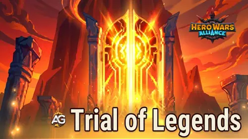

Trial of Legends contains eight cumulative mission chains and 84 listed milestones. The event has seven login milestones; check the current in-game start and end times. Progress remains during the full event, but the chains do not reset daily and cannot be repeated after completion.

Ascendant Glory Guides
Do the Missions Reset or Repeat?
| Mission Type | Duration | Daily Reset | Repeatable |
|---|---|---|---|
| All eight mission chains | Seven-day event; check the current in-game dates | No — progress is cumulative | No — each milestone is claimed once |
| Day After Day | One login can be recorded per event day | The login opportunity refreshes, but milestone progress remains | No |
Important: “During a special event” means the requirement can be completed at any point within the seven-day event window. It does not mean the reward ladder restarts every day.
Best-Day Planner
| Action | Best Timing | Guild Versus Rate | Potential |
|---|---|---|---|
| Generous Soul: earn 35,000 VIP Points | Monday through Saturday | 1 = 100 points | 3,500,000 points |
| Power Balance: spend 750,000 Rune Stones | Saturday | 20 = 100 points | 3,750,000 points |
| Hidden Reserves: spend 250,000 Titan Potions | Monday | 100 = 150 points | 375,000 points |
| Heroic Discovery: open 100 Heroic Chests | Friday | 1 = 4,000 points | 400,000 points |
| Kingdom Mechanic Acceleration: construction speed-ups | Tuesday | 1 = 200 points | Per qualifying minute |
| Kingdom Mechanic Acceleration: research speed-ups | Wednesday | 1 = 200 points | Per qualifying minute |
| Kingdom Mechanic Acceleration: training speed-ups | Friday / Saturday | 1 = 200 points | Per qualifying minute |
| Kingdom Mechanic Acceleration: healing speed-ups | Saturday | 1 = 200 points | Per qualifying minute |
| United Front: Energy spent to earn Guild Activity | Wednesday (indirect) | 3 = 100 points | Depends on qualifying resources spent |
| Spend 37,000 earned Titan Skin Stones | Monday (reward use) | 15 = 100 points | 246,600 points |
| Receive 88 earned Hero Soul Stones | Tuesday (reward claim) | 1 = 500 points | 44,000 points |
| Open 34 earned Elemental Spheres | Monday / Friday (reward use) | 1 = 1,200 points | 40,800 points |
| Spend 4,900 earned Mastery Crystals | Thursday (reward use) | 15 = 200 points | 65,200 points |
| Spend Hero Skin Stones obtained from reward chests | Tuesday (reward use) | 15 = 700 points | Depends on qualifying resources spent |
| Login, Emerald spending, Guild Activity itself | No direct match | — | — |
Potentials use base Guild Versus rates and complete groups of each requirement. They assume every listed action or reward is available on its matching day; they are not a guaranteed combined total. Daily Guild Versus chest requirements can be reached before these maximum point totals. Sunday has no Guild Versus tasks.
Plan resource timing: use Titan Potions Monday, spend saved Energy for Guild Activity Wednesday, open saved Heroic Chests Friday, and spend Rune Stones Saturday. Match construction speed-ups to Tuesday, research to Wednesday, training to Friday or Saturday, and healing to Saturday. Each qualifying minute awards 200 Guild Versus points. If all 2,460 minutes are used on matching tasks, they contribute 492,000 points in total; the split depends on the mechanics accelerated. Log in every day and finish all intended event milestones before the event deadline.
Use rewards when available: Titan Skin Stones score Monday, Hero Soul Stones when received Tuesday, Mastery Crystals Thursday, and Elemental Spheres Monday or Friday. Whisper Ring Recipe Fragments may help complete equipment that scores Thursday according to rarity. Rewards earned after their matching weekday can be saved for the next week; they cannot contribute retroactively. Energy and Adventure Energy are different resources.
1. Day After Day
Seven-day cumulative mission: progress remains throughout the event. This chain does not reset daily or repeat after completion.
Log in on each event day. Each milestone awards 500 Ascension Crests and 300 Titan Skin Stones.
| Logins | Ascension Crests | Other Rewards |
|---|---|---|
| 1 | 500 | 300 Titan Skin Stones |
| 2 | 500 | 300 Titan Skin Stones |
| 3 | 500 | 300 Titan Skin Stones |
| 4 | 500 | 300 Titan Skin Stones |
| 5 | 500 | 300 Titan Skin Stones |
| 6 | 500 | 300 Titan Skin Stones |
| 7 | 500 | 300 Titan Skin Stones |
| Total | 3,500 Ascension Crests | 2,100 Titan Skin Stones |
2. Generous Soul
Seven-day cumulative mission: progress remains throughout the event. This chain does not reset daily or repeat after completion.
Earn VIP Points during the event. Monday through Saturday award 100 Guild Versus points per VIP Point; 35,000 VIP Points can contribute 3,500,000 points on active days.
| VIP Points | Ascension Crests | Other Rewards |
|---|---|---|
| 700 | 1,500 | 5 Crow Soul Stones; 30 Season Points |
| 1,500 | 3,000 | 1,000 Adventure Coins; 7 Eva Soul Stones |
| 3,000 | 5,000 | 10 Pallant Soul Stones; 10 Orm Soul Stones |
| 6,000 | 5,000 | 15 Adventure Energy; 50 Season Points |
| 12,500 | 7,500 | 5,000 Adventure Coins; 20 Adventure Energy |
| 25,000 | 8,000 | 10,000 Adventure Coins; 75 Season Points |
| 35,000 | 16,000 | 30,000 Adventure Coins; 30 Adventure Energy |
| Total | 46,000 Ascension Crests | 5 Crow Soul Stones; 155 Season Points; 46,000 Adventure Coins; 7 Eva Soul Stones; 10 Pallant Soul Stones; 10 Orm Soul Stones; 65 Adventure Energy |
3. Wise Exchange
Seven-day cumulative mission: progress remains throughout the event. This chain does not reset daily or repeat after completion.
Spend Emeralds during the event. Emerald spending has no direct Guild Versus task; match purchased actions to their corresponding scoring day.
| Emeralds Spent | Ascension Crests | Other Rewards |
|---|---|---|
| 1,000 | 300 | 4 Elemental Spheres; 10 Season Points |
| 2,500 | 500 | 3 Eva Soul Stones; 6 Orm Soul Stones |
| 4,500 | 700 | 2,000 Titan Skin Stones; 20 Season Points |
| 7,500 | 900 | 2,000 Titan Potions |
| 11,000 | 1,100 | 25 Season Points; 20 Artifact Chest Keys |
| 14,500 | 1,300 | 4,000 Adventure Coins |
| 18,000 | 1,600 | 2,000 Titan Skin Stones; 10 Adventure Energy |
| 23,000 | 1,800 | 25 Season Points; 30 Artifact Chest Keys |
| 32,000 | 2,200 | 35 Season Points |
| 45,000 | 3,000 | 16 Pallant Soul Stones |
| 65,000 | 3,500 | 300 Meta Cubes; 40 Season Points |
| 80,000 | 4,000 | 3,000 Adventure Coins |
| 100,000 | 4,500 | 3,000 Titan Skin Stones; 30 Adventure Energy |
| 125,000 | 5,000 | 4,000 Adventure Coins; 45 Season Points |
| 160,000 | 7,500 | 6,000 Adventure Coins |
| 200,000 | 10,000 | 10,000 Adventure Coins; 50 Season Points |
| Total | 47,900 Ascension Crests | 4 Elemental Spheres; 250 Season Points; 3 Eva Soul Stones; 6 Orm Soul Stones; 7,000 Titan Skin Stones; 2,000 Titan Potions; 50 Artifact Chest Keys; 27,000 Adventure Coins; 40 Adventure Energy; 16 Pallant Soul Stones; 300 Meta Cubes |
4. United Front
Seven-day cumulative mission: progress remains throughout the event. This chain does not reset daily or repeat after completion.
Earn Guild Activity points during the event. Energy spending on Wednesday can also contribute to Guild Versus; Guild Activity itself has no direct scoring task.
| Guild Activity Points | Ascension Crests | Other Rewards |
|---|---|---|
| 500 | 300 | 2 Crow Soul Stones; 2 Eva Soul Stones |
| 2,000 | 450 | 10 Adventure Energy; 25 Season Points |
| 5,000 | 600 | 200 Mastery Crystals; 3 Crow Soul Stones |
| 8,000 | 800 | 100 Meta Cubes; 30 Season Points |
| 10,000 | 1,000 | 15 Adventure Energy; 2 Eva Soul Stones |
| 20,000 | 1,500 | 2,000 Titan Potions; 40 Season Points |
| 30,000 | 2,000 | 3,000 Titan Skin Stones; 1,000 Adventure Coins |
| 40,000 | 2,500 | 10 Whisper Ring Recipe Fragments; 10 Crow Soul Stones |
| 45,000 | 3,000 | 10 Pallant Soul Stones; 10 Orm Soul Stones |
| Total | 12,150 Ascension Crests | 15 Crow Soul Stones; 4 Eva Soul Stones; 25 Adventure Energy; 95 Season Points; 200 Mastery Crystals; 100 Meta Cubes; 2,000 Titan Potions; 3,000 Titan Skin Stones; 1,000 Adventure Coins; 10 Whisper Ring Recipe Fragments; 10 Pallant Soul Stones; 10 Orm Soul Stones |
5. Power Balance
Seven-day cumulative mission: progress remains throughout the event. This chain does not reset daily or repeat after completion.
Best day: Saturday. Every 20 Rune Stones spent gives 100 Guild Versus points. Spending 750,000 Rune Stones contributes 3,750,000 base points. The 350,000 milestone includes Soleil’s Demonic Skin+ and 1 Demonic Skin Fragment.
| Rune Stones Spent | Ascension Crests | Other Rewards |
|---|---|---|
| 1,500 | 300 | 1 Large Skin Stone Chests; 2 Eva Soul Stones |
| 3,500 | 500 | 5 Whisper Ring Recipe Fragments; 25 Season Points |
| 7,500 | 700 | 100 Meta Cubes; 5 Elemental Spheres |
| 10,000 | 1,000 | 200 Mastery Crystals; 30 Season Points |
| 14,000 | 1,200 | 500 Adventure Coins; 10 Elemental Spheres |
| 17,500 | 1,400 | 1,000 Adventure Coins; 35 Season Points |
| 22,500 | 1,600 | 10 Adventure Energy; 4 Eva Soul Stones |
| 30,000 | 1,800 | 1,500 Adventure Coins; 10 Whisper Ring Recipe Fragments |
| 40,000 | 2,000 | 7 Pallant Soul Stones; 40 Season Points |
| 55,000 | 2,200 | 500 Mastery Crystals; 10 Elemental Spheres |
| 70,000 | 2,800 | 15 Whisper Ring Recipe Fragments; 10 Crow Soul Stones |
| 90,000 | 3,200 | 10 Orm Soul Stones; 50 Season Points |
| 120,000 | 3,600 | 1,000 Titan Skin Stones; 3,000 Adventure Coins |
| 150,000 | 4,200 | 10 Crow Soul Stones; 20 Artifact Chest Keys |
| 200,000 | 5,000 | 30 Whisper Ring Recipe Fragments; 70 Season Points |
| 275,000 | 6,000 | 4,000 Adventure Coins; 10 Soleil Soul Stones |
| 350,000 | 8,000 | 1 Soleil Demonic Skin+; 1 Soleil Demonic Skin Fragments |
| 500,000 | 10,000 | 7,500 Titan Skin Stones; 100 Season Points |
| 750,000 | 15,000 | 6,000 Adventure Coins |
| Total | 70,500 Ascension Crests | 1 Large Skin Stone Chests; 6 Eva Soul Stones; 60 Whisper Ring Recipe Fragments; 350 Season Points; 100 Meta Cubes; 25 Elemental Spheres; 700 Mastery Crystals; 16,000 Adventure Coins; 10 Adventure Energy; 7 Pallant Soul Stones; 20 Crow Soul Stones; 10 Orm Soul Stones; 8,500 Titan Skin Stones; 20 Artifact Chest Keys; 10 Soleil Soul Stones; 1 Soleil Demonic Skin+; 1 Soleil Demonic Skin Fragments |
6. Kingdom Mechanic Acceleration
Seven-day cumulative mission: progress remains throughout the event. This chain does not reset daily or repeat after completion.
Use speed-ups on any Realm mechanic for a cumulative 2,460 minutes (41 hours). This replaces the previous Expedition-start mission. The reference lists no daily reset or repeatable milestones. For Guild Versus, use construction speed-ups Tuesday, research Wednesday, training Friday or Saturday, and healing Saturday: each qualifying minute gives 200 points.
| Speed-up Minutes Used | Ascension Crests | Other Rewards |
|---|---|---|
| 720 | 250 | 2,000 Titan Skin Stones; 4 Crow Soul Stones |
| 960 | 450 | 10 Rune Spheres; 20 Season Points |
| 1,140 | 750 | 3,000 Titan Skin Stones |
| 1,260 | 1,000 | 25 Season Points; 4 Crow Soul Stones |
| 1,500 | 1,500 | 30 Adventure Energy; 5 Elemental Spheres |
| 1,980 | 4,000 | 4 Whisper Ring Recipe Fragments; 10 Orm Soul Stones |
| 2,460 | 6,000 | 25 Season Points; 30 Artifact Chest Keys |
| Total | 13,950 Ascension Crests | 5,000 Titan Skin Stones; 8 Crow Soul Stones; 10 Rune Spheres; 70 Season Points; 30 Adventure Energy; 5 Elemental Spheres; 4 Whisper Ring Recipe Fragments; 10 Orm Soul Stones; 30 Artifact Chest Keys |
8. Heroic Discovery
Seven-day cumulative mission: progress remains throughout the event. This chain does not reset daily or repeat after completion.
Best day: Friday. Each Heroic Chest opened gives 4,000 Guild Versus points; 100 openings contribute 400,000 points. Use free openings during the event and prioritize saved openings on Friday.
| Heroic Chests Opened | Ascension Crests | Other Rewards |
|---|---|---|
| 2 | 500 | 5 Pallant Soul Stones; 5 Orm Soul Stones |
| 5 | 750 | 600 Titan Skin Stones; 20 Skin Stone Chests |
| 10 | 1,000 | 800 Titan Skin Stones; 5 Whisper Ring Recipe Fragments |
| 15 | 1,500 | 500 Adventure Coins; 20 Orm Soul Stones |
| 20 | 2,000 | 1,000 Adventure Coins; 15 Pallant Soul Stones |
| 30 | 2,500 | 5,000 Titan Skin Stones; 500 Meta Cubes |
| 50 | 3,000 | 1,500 Mastery Crystals; 2,000 Adventure Coins |
| 75 | 4,000 | 10 Whisper Ring Recipe Fragments; 20 Large Skin Stone Chests |
| 100 | 5,000 | 2,000 Mastery Crystals; 7,000 Adventure Coins |
| Total | 20,250 Ascension Crests | 20 Pallant Soul Stones; 25 Orm Soul Stones; 6,400 Titan Skin Stones; 20 Skin Stone Chests; 15 Whisper Ring Recipe Fragments; 10,500 Adventure Coins; 500 Meta Cubes; 3,500 Mastery Crystals; 20 Large Skin Stone Chests |
Total Rewards from Trial of Legends
This summary combines all 84 one-time milestones across eight event-wide chains. Hero and Titan Soul Stones are listed separately by character.
| Reward | Total |
|---|---|
| Titan Skin Stones | 37,000 |
| Ascension Crests | 230,550 |
| Crow Soul Stones | 58 |
| Season Points | 1,015 |
| Adventure Coins | 106,000 |
| Eva Soul Stones | 20 |
| Pallant Soul Stones | 77 |
| Orm Soul Stones | 81 |
| Adventure Energy | 170 |
| Elemental Spheres | 34 |
| Titan Potions | 4,000 |
| Artifact Chest Keys | 100 |
| Meta Cubes | 1,500 |
| Mastery Crystals | 4,900 |
| Whisper Ring Recipe Fragments | 109 |
| Large Skin Stone Chests | 31 |
| Soleil Soul Stones | 10 |
| Soleil Demonic Skin+ | 1 |
| Soleil Demonic Skin Fragments | 1 |
| Rune Spheres | 10 |
| Skin Stone Chests | 91 |
| Mission Milestones | 84; cumulative for seven days; none repeatable |